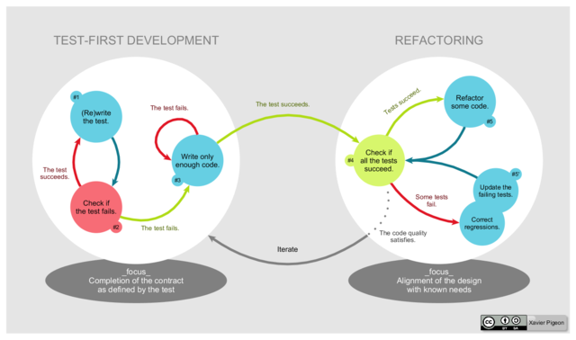

Test-driven development
Test, code, refactor. Repeat as necessary.
Dec 12, 2015
What is test-driven development?
Test-driven development is a style of coding that centers on the repetition of a short development cycle. Basically, a programmer adds a test case that defines a new function, adds a minimum amount of code to pass that test (and all previous tests), and then refactors the code.
OK, then. Why would I want to do it?
- Tends to produce modular, flexible, and extensible code
- Ensures all code is covered by at least one test
- Limits number of defects in the code
- Catches errors early in the development cycle, helping to avoid complicated degugging later in development
- Tests tend to be very thorough, and detect unexpected changes in code behavior when the code base is later edited
- Prevents extraneous labor since code is not written unless there is first a test to motivate that code
Convincing. How do I do it?
- Add a test - figure out what feature you would like to add, and then write a test to cover that feature.
- Run all tests and make sure the new one fails - this will validate that the test setup is working, that the feature you want to add doesn't already exist, and that the new test is actually useful and fails in the expected circumstances.
- Write new code - write code so that your new test passes; it doesn't have to be pretty, it just has to work. For now.
- Run the tests again - they should all pass. If so, congratulations - you added a new feature and didn't break anything. Move to the next step. Otherwise, go fix your new code.
- Refactor your code - clean up your code; improve the readability, split methods to maintain simple, one-function methods, remove duplication, etc.
- Test again - make sure your refactoring didn't break anything.
- Do it again - write more tests, add more features, be more awesome.
Do you maybe have a fancy graphic to illustrate the process of test-driven design?
Of course I do. Well, Wikipedia else does, and I'm heartlessly swiping it:

"TDD Global Lifecycle" by Xarawn - Own work. Licensed under CC BY-SA 4.0 via Commons.
{kind=link}
What issues are there with the process?